Analyze bank customers' demographic and financial profiles—including age, gender, country, credit score, and balance—to accurately predict whether a customer is likely to leave the bank or stay.
The dataset identifies multiple factors that influence a customer's decision to sever ties with the institution (**independent variables**). The ultimate objective is to map these factors against the target variable (**dependent variable**): whether the customer exited or was successfully retained.
| Column Name | Description | Type / Role |
|---|---|---|
| RowNumber | Sequential row index identifier. | Metadata |
| CustomerId | Unique identification key for individual customers. | Metadata |
| Surname | Customer's last name. | Metadata |
| CreditScore | Credit bureau score of the customer. | Feature (Predictor) |
| Geography | Country of residence. | Feature (Predictor) |
| Age | Age of the customer. | Feature (Predictor) |
| Tenure | Number of years the customer has been with the bank. | Feature (Predictor) |
| Balance | Current bank account balance. | Feature (Predictor) |
| NumOfProducts | Number of specific financial products utilized by the customer. | Feature (Predictor) |
| HasCrCard | Binary flag indicating credit card ownership (1 = Yes, 0 = No). | Feature (Predictor) |
| IsActiveMember | Binary flag indicating recent user activity (1 = Active, 0 = Inactive). | Feature (Predictor) |
| EstimatedSalary | Estimated annual salary of the customer ($). | Feature (Predictor) |
| Exited | Binary flag indicating customer status (1 = Account Closed, 0 = Retained). | Target Variable |
We begin by importing the foundational data manipulation, numerical processing, and visualization libraries.
import pandas as pd
import numpy as np
%matplotlib inline
import matplotlib.pyplot as plt
import seaborn as snsLoad the target CSV file into a Pandas DataFrame and inspect the first five rows to verify the columns.
customer_churn_data = pd.read_csv("churn.csv")
customer_churn_data.head()| RowNumber | CustomerId | Surname | CreditScore | Geography | Gender | Age | Tenure | Balance | NumOfProducts | HasCrCard | IsActiveMember | EstimatedSalary | Exited | |
|---|---|---|---|---|---|---|---|---|---|---|---|---|---|---|
| 0 | 1 | 15634602 | Hargrave | 619 | France | Female | 42 | 2 | 0.00 | 1 | 1 | 1 | 101348.88 | 1 |
| 1 | 2 | 15647311 | Hill | 608 | Spain | Female | 41 | 1 | 83807.86 | 1 | 0 | 1 | 112542.58 | 0 |
| 2 | 3 | 15619304 | Onio | 502 | France | Female | 42 | 8 | 159660.80 | 3 | 1 | 0 | 113931.57 | 1 |
| 3 | 4 | 15701354 | Boni | 699 | France | Female | 39 | 1 | 0.00 | 2 | 0 | 0 | 93826.63 | 0 |
| 4 | 5 | 15737888 | Mitchell | 850 | Spain | Female | 43 | 2 | 125510.82 | 1 | 1 | 1 | 79084.10 | 0 |
customer_churn_data.shape
Drop metadata parameters (RowNumber,
CustomerId,
Surname) that do not impact model performance.
customer_churn_data = customer_churn_data.drop(['RowNumber', 'CustomerId', 'Surname'], axis=1)customer_churn_data.isnull().sum()customer_churn_data.dtypescustomer_churn_data.duplicated().sum()customer_churn_data.rename(
columns={'Exited': 'Churn'},
inplace=True
)Isolate balance evaluations falling outside operational data boundaries.
Q1 = customer_churn_data['Balance'].quantile(0.25)
Q3 = customer_churn_data['Balance'].quantile(0.75)
IQR = Q3 - Q1
lower_bound = Q1 - 1.5 * IQR
upper_bound = Q3 + 1.5 * IQR
# Filtering out mathematical outliers
customer_churn_data = customer_churn_data[
(customer_churn_data['Balance'] > lower_bound) &
(customer_churn_data['Balance'] < upper_bound)
]
print(f"Calculated IQR: {IQR}")Mathematical distributions, central tendency metrics, and variance scales across quantitative parameters.
customer_churn_data.describe()| Metrics | CreditScore | Age | Tenure | Balance | NumOfProducts | HasCrCard | IsActiveMember | EstimatedSalary | Churn |
|---|---|---|---|---|---|---|---|---|---|
| count | 10000.00 | 10000.00 | 10000.00 | 10000.00 | 10000.00 | 10000.00 | 10000.00 | 10000.00 | 10000.00 |
| mean | 650.53 | 38.92 | 5.01 | 76485.89 | 1.53 | 0.71 | 0.52 | 100090.24 | 0.20 |
| std | 96.65 | 10.49 | 2.89 | 62397.41 | 0.58 | 0.46 | 0.50 | 57510.49 | 0.40 |
| min | 350.00 | 18.00 | 0.00 | 0.00 | 1.00 | 0.00 | 0.00 | 11.58 | 0.00 |
| 25% | 584.00 | 32.00 | 3.00 | 0.00 | 1.00 | 0.00 | 0.00 | 51002.11 | 0.00 |
| 50% | 652.00 | 37.00 | 5.00 | 97198.54 | 1.00 | 1.00 | 1.00 | 100193.92 | 0.00 |
| 75% | 718.00 | 44.00 | 7.00 | 127644.24 | 2.00 | 1.00 | 1.00 | 149388.25 | 0.00 |
| max | 850.00 | 92.00 | 10.00 | 250898.09 | 4.00 | 1.00 | 1.00 | 199992.48 | 1.00 |
Inspection of the clean data frame ready for feature encoding and model training steps.
# Previewing the sanitized features
customer_churn_data.head()| Index | CreditScore | Geography | Gender | Age | Tenure | Balance | NumOfProducts | HasCrCard | IsActiveMember | EstimatedSalary | Churn |
|---|---|---|---|---|---|---|---|---|---|---|---|
| 0 | 619 | France | Female | 42 | 2 | 0.00 | 1 | 1 | 1 | 101348.88 | 1 |
| 1 | 608 | Spain | Female | 41 | 1 | 83807.86 | 1 | 0 | 1 | 112542.58 | 0 |
| 2 | 502 | France | Female | 42 | 8 | 159660.80 | 3 | 1 | 0 | 113931.57 | 1 |
| 3 | 699 | France | Female | 39 | 1 | 0.00 | 2 | 0 | 0 | 93826.63 | 0 |
| 4 | 850 | Spain | Female | 43 | 2 | 125510.82 | 1 | 1 | 1 | 79084.10 | 0 |
In this phase, we analyze the structural distribution of individual variables, evaluate the correlation metrics, and study underlying feature relationships against our target label to discover significant indicators of user departure.
plt.figure(figsize=(10, 6))
plt.pie(customer_churn_data['Churn'].value_counts(), labels=['No', 'Yes'], autopct='%1.2f%%')
plt.title('Churn Percentage')
plt.show()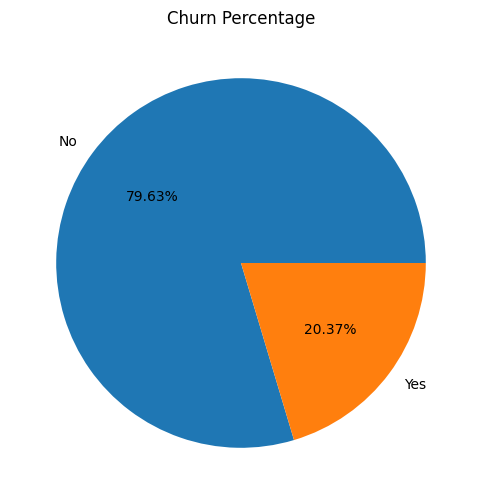
The visualization highlights a significant class skew inside our target profile. A large majority of recorded users continue utilizing the bank's operational services, while only 20.40% of the customer base has actively broken ties.
```python
sns.countplot(x='Gender',data=customer_churn_data,hue='Churn') plt.title('Gender Distribution') plt.xlabel('Gender') plt.ylabel('Count') plt.show() ```
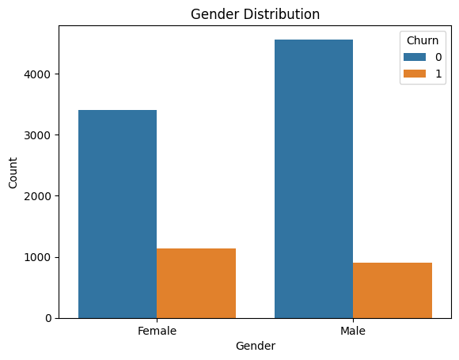
As shown in the graph, majority of the customers are male. But upon looking at the customer churn, we can see that females have more tendency to churn as compared to males. However there is not much difference between the churn count of the two genders so we cannot have a hypothesis regarding the customer churn based on the gender of the customer.
```python
sns.histplot(data=customer_churn_data,x='Age',hue='Churn',kde=True,multiple='stack') ```
<Axes: xlabel='Age', ylabel='Count'>
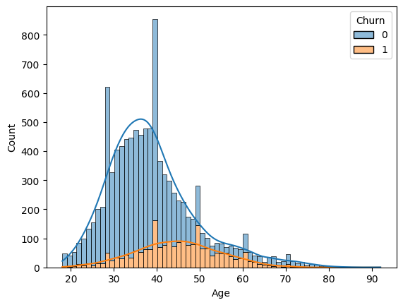
This histogram visualizes the age distribution and the churn count of the customers. The majority of the customers are from age group 30-40 years old. However the customer churn count is highest for the customersof age 40 and 50. In addition to that customers from age group 20-25 years old count for the lowest churn count. Therefore, age plays a significant role in customer churn, where late adults are more likely to churn as compared to young adults with minimal churn count.
```python
fig,ax = plt.subplots(1,2,figsize=(15,5)) sns.boxplot(x='Churn',y='CreditScore',hue='Churn',data=customer_churn_data,ax=ax[0]) sns.violinplot(x='Churn',y='CreditScore',hue='Churn',data=customer_churn_data,ax=ax[1]) ```
<Axes: xlabel='Churn', ylabel='CreditScore'>
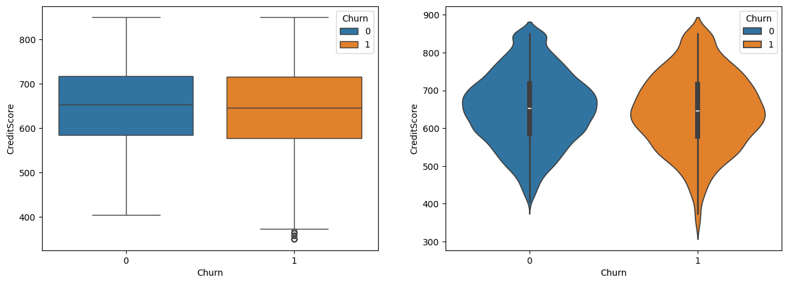
The boxplot and violinplot shows the distribution of curstomer's credit score along with their churn. In the boxplot, the median of both the churn and non churn customers are almost same. In addition to that, the shape of violinplot is also similar for both the churn and non churn customers. However some churn customers have low credit score, but on the whole, the credit score is not a good indicator of churn.
```python
sns.countplot(data=customer_churn_data,x='Geography',hue='Churn') plt.title('Geography and Churn') plt.xlabel("Geography") plt.ylabel("Churn") plt.show() ```
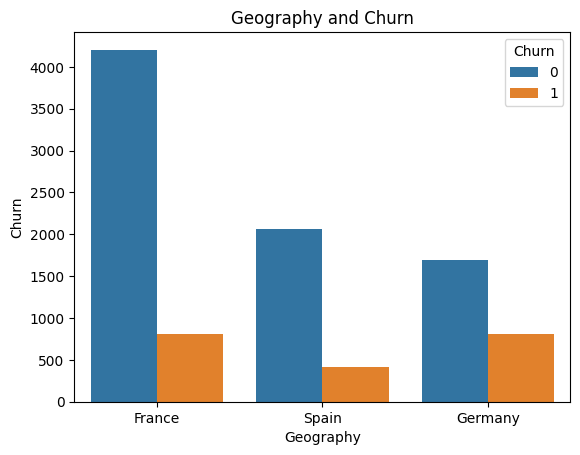
This graphs shows the number of customers from the their repective countries aling with their churn count. Majority of the customers are from France, followed by Spain and Germany. However in contrast to that Germany has the highest number of customer curn followed by France and Spain. From this we can infer that German customers are more likely to churn than the customers from other countries.
python fig,ax =plt.subplots(1,2,figsize=(15,5))
sns.countplot(data=customer_churn_data,x='Tenure',ax=ax[0])
sns.countplot(data=customer_churn_data,x='Tenure',hue='Churn',ax=ax[1])
<Axes: xlabel='Tenure', ylabel='count'>
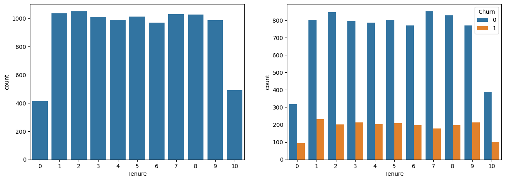
Tensure refers to the time (in years) that a customer has been a client of the bank. Majority of the customers in the dataset have a tenure between 1-9 years, having equal distribution among them. There are very few customers with a tenure of less than 1 years or more than 9 years. Looking at the churn of these customers based on their tenure, it can be observed that customers with tenure 1-9 years have higher churn count with maximum in customers with 1 year tenure followed those with 9 year tenure. However customers more than 9 years on tenure counts for the least churn. This is because the customers with higher tenure are more loyal to the bank and less likely to churn.
```python
sns.histplot(data=customer_churn_data,x='Balance',hue='Churn',kde=True,multiple='stack') ```
<Axes: xlabel='Balance', ylabel='Count'>
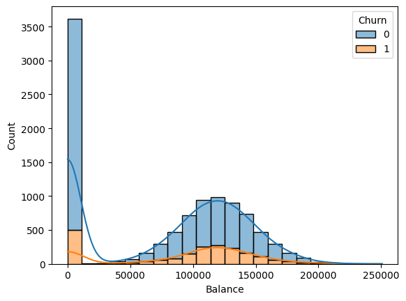
A huge number of customers have zero bank balance which also resulted in them leaving the bank. However, customer having bank balance between 100000 to 150000 are more likely to leave the bank after the customers with zero bank balance.
python
sns.countplot(data=customer_churn_data,x='NumOfProducts',hue='Churn')
<Axes: xlabel='NumOfProducts', ylabel='count'>
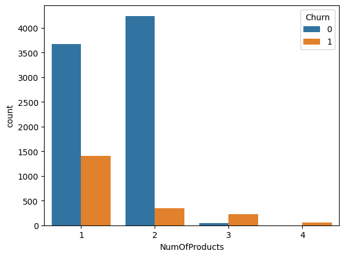
In the dataset, we have customers in four categories according to the number of products purchased. The customers with purchase or 1 or 2 products are highest in number and have low churn count in comparison to the non churn customers in the category. However, in the category where customers have purchased 3 or 4 products the number of leaving customers is much higher than the non leaving customers. Therefore, the number of product purchased is a good indicator of customer churn.
```python
sns.countplot(data=customer_churn_data,x='HasCrCard',hue='Churn') ```
<Axes: xlabel='HasCrCard', ylabel='count'>
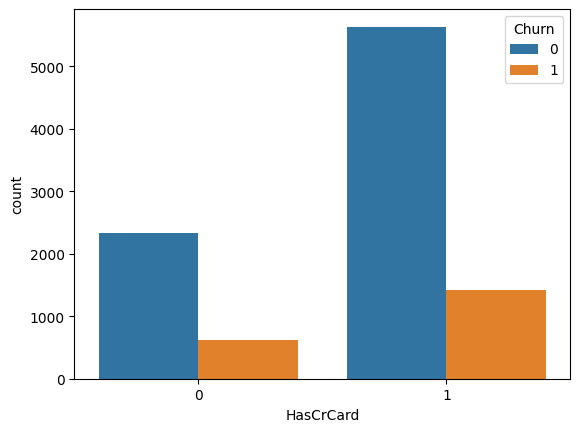
Majoity of the customers have credit cards i.e. nealy 70% of the customers have credit cards leaving 30% of the customers who do not have credit cards. Moreover, the number of customers leaving the bank are more whom have a credit card.
```python
sns.countplot(data=customer_churn_data,x='IsActiveMember',hue='Churn') ```
<Axes: xlabel='IsActiveMember', ylabel='count'>
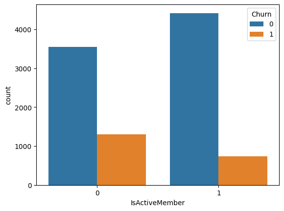
As expected, the churn count is higher for non active members as compared to the active members of the bank. This is because the active members are more satisfied with the services of the bank and hence they are less likely to leave the bank. Therefore, the bank should focus on the non active members and try to improve their services to retain them.
```python
sns.histplot(data=customer_churn_data,x='EstimatedSalary',hue='Churn',multiple='stack', palette='Set2') ```
<Axes: xlabel='EstimatedSalary', ylabel='Count'>
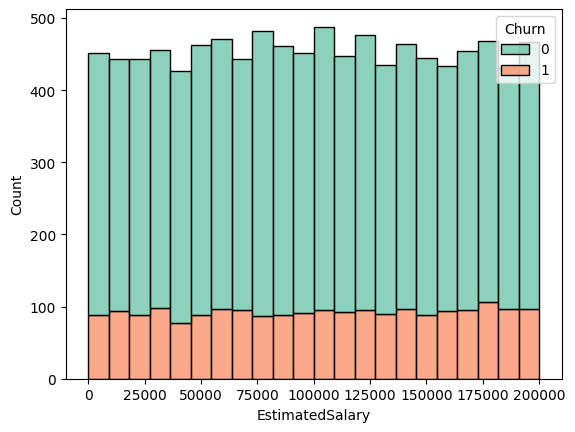
This graph shows the distribution of the estimated salary of the customers along with the churn count. On the whole the there is no definite pattern in the salary distribution of the customers who churned and who didn't. Therefore estimated salary is not a good predictor of churn.
```python
from sklearn.preprocessing import LabelEncoder variable=['Geography','Gender'] le = LabelEncoder() for i in variable: le.fit(customer_churn_data[i].unique()) customer_churn_data[i] = le.transform(customer_churn_data[i]) print(i,customer_churn_data[i].unique()) ```
Geography [0 2 1]
Gender [0 1]
python customer_churn_data.columns
Index(['CreditScore', 'Geography', 'Gender', 'Age', 'Tenure', 'Balance',
'NumOfProducts', 'HasCrCard', 'IsActiveMember', 'EstimatedSalary',
'Churn'],
dtype='object')
```python
from sklearn.preprocessing import StandardScaler scalar = StandardScaler() customer_churn_data[['CreditScore','Balance','EstimatedSalary']] = scalar.fit_transform(customer_churn_data[['CreditScore','Balance','EstimatedSalary']]) ```
python customer_churn_data.head()
| CreditScore | Geography | Gender | Age | Tenure | Balance | NumOfProducts | HasCrCard | IsActiveMember | EstimatedSalary | Churn | |
|---|---|---|---|---|---|---|---|---|---|---|---|
| 0 | -0.326221 | 0 | 0 | 42 | 2 | -1.225848 | 1 | 1 | 1 | 0.021886 | 1 |
| 1 | -0.440036 | 2 | 0 | 41 | 1 | 0.117350 | 1 | 0 | 1 | 0.216534 | 0 |
| 2 | -1.536794 | 0 | 0 | 42 | 8 | 1.333053 | 3 | 1 | 0 | 0.240687 | 1 |
| 3 | 0.501521 | 0 | 0 | 39 | 1 | -1.225848 | 2 | 0 | 0 | -0.108918 | 0 |
| 4 | 2.063884 | 2 | 0 | 43 | 2 | 0.785728 | 1 | 1 | 1 | -0.365276 | 0 |
python plt.figure(figsize=(12,12))
sns.heatmap(customer_churn_data.corr(),annot=True,cmap='coolwarm')
plt.title("Correlation Matrix") plt.show()
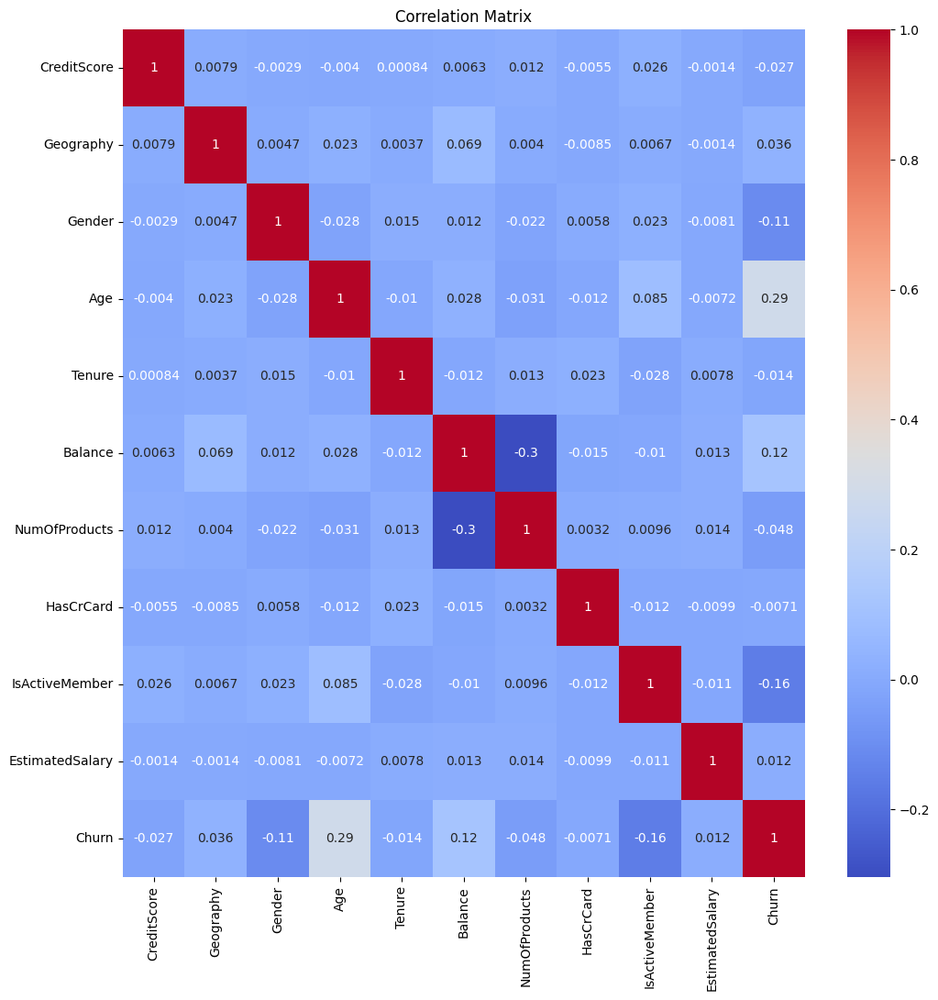
There is no significant coorelation among the variables. So, I will proceed to model building.
```python
from sklearn.model_selection import train_test_split X_train,X_test,y_train,y_test =train_test_split(customer_churn_data.drop('Churn',axis=1),customer_churn_data['Churn'],test_size=0.3,random_state=42)
```
For predicting the churn of customers, depending on the data of the customers, we will use the following models:
Using GridSearchCV to find the best parameters for the model.
```python from sklearn.tree import DecisionTreeClassifier from sklearn.model_selection import GridSearchCV
dtree = DecisionTreeClassifier()
param_grid = { 'max_depth':[2,4,6,8,10,12,14,16,18,20], 'min_samples_leaf':[1,2,3,4,5,6,7,8,9,10], 'criterion':['gini','entropy'], 'random_state':[0,42] }
grid_dtree = GridSearchCV(dtree,param_grid,cv=5,n_jobs=-1,scoring='roc_auc',verbose= 1)
grid_dtree.fit(X_train,y_train)
print('Best parameters found :', grid_dtree.best_params_)
```
Fitting 5 folds for each of 400 candidates, totalling 2000 fits
Best parameters found : {'criterion': 'gini', 'max_depth': 6, 'min_samples_leaf': 10, 'random_state': 42}
Adding the parameters to the model
python dtree = DecisionTreeClassifier(criterion= 'gini', max_depth=
6, min_samples_leaf= 10, random_state= 42) dtree
DecisionTreeClassifier(max_depth=6, min_samples_leaf=10, random_state=42)In a Jupyter environment, please rerun this cell to show the HTML representation or trust the notebook.
| criterion | 'gini' | |
| splitter | 'best' | |
| max_depth | 6 | |
| min_samples_split | 2 | |
| min_samples_leaf | 10 | |
| min_weight_fraction_leaf | 0.0 | |
| max_features | None | |
| random_state | 42 | |
| max_leaf_nodes | None | |
| min_impurity_decrease | 0.0 | |
| class_weight | None | |
| ccp_alpha | 0.0 | |
| monotonic_cst | None |
In a Jupyter environment, please rerun this cell to show the HTML representation or trust the notebook. On GitHub, the HTML representation is unable to render, please try loading this page with nbviewer.org.
```python
dtree.fit(X_train,y_train)
dtree.score(X_train,y_train) ```
0.8581428571428571
Predicting Customer Churn from Test set
python dtree_pred = dtree.predict(X_test)
```python from sklearn.ensemble import RandomForestClassifier
rfc = RandomForestClassifier()
param_grid0= { 'max_depth':[2,4,6,8,10], 'min_samples_leaf':[2,4,6,8,10], 'criterion':['gini','entropy'], 'random_state':[0,42] }
grid_rfc = GridSearchCV(rfc,param_grid0,cv=5,n_jobs=-1,scoring='roc_auc',verbose=1)
grid_rfc.fit(X_train,y_train)
print('Best parameters found :', grid_rfc.best_params_)
```
Fitting 5 folds for each of 100 candidates, totalling 500 fits
Best parameters found : {'criterion': 'entropy', 'max_depth': 10, 'min_samples_leaf': 8, 'random_state': 0}
Adding the parameters to the model
python rfc = RandomForestClassifier(criterion= 'entropy', max_depth =
10, min_samples_leaf = 8, random_state= 0) rfc
RandomForestClassifier(criterion='entropy', max_depth=10, min_samples_leaf=8,
random_state=0)
In a Jupyter environment, please rerun this cell to show the HTML
representation or trust the notebook. | n_estimators | 100 | |
| criterion | 'entropy' | |
| max_depth | 10 | |
| min_samples_split | 2 | |
| min_samples_leaf | 8 | |
| min_weight_fraction_leaf | 0.0 | |
| max_features | 'sqrt' | |
| max_leaf_nodes | None | |
| min_impurity_decrease | 0.0 | |
| bootstrap | True | |
| oob_score | False | |
| n_jobs | None | |
| random_state | 0 | |
| verbose | 0 | |
| warm_start | False | |
| class_weight | None | |
| ccp_alpha | 0.0 | |
| max_samples | None | |
| monotonic_cst | None |
In a Jupyter environment, please rerun this cell to show the HTML representation or trust the notebook. On GitHub, the HTML representation is unable to render, please try loading this page with nbviewer.org.
```python
rfc.fit(X_train,y_train)
rfc.score(X_train,y_train) ```
0.8767142857142857
Predicting the customer churn from Test set
python rfc_pred = rfc.predict(X_test)
```python
from sklearn.metrics import confusion_matrix plt.figure(figsize=(8,6)) sns.heatmap(confusion_matrix(y_test,dtree_pred),annot=True,fmt='d',cmap='Blues') plt.xlabel('Predicted') plt.ylabel('Actual') plt.title('Confusion Matrix for Decision Tree') plt.show() ```
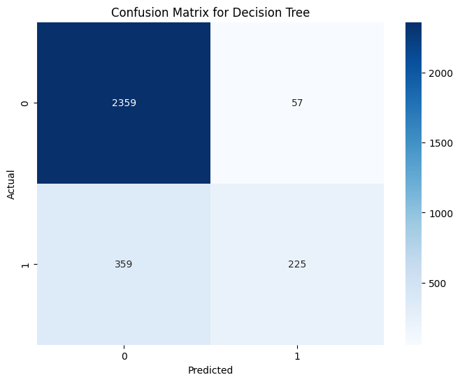
The True Positive shows the count of correctly classified data points whereas the False Positive elements are those that are misclassified by the model. The higher the True Positive values of the confusion matrix the better, indicating many correct predictions.
```python
ax = sns.kdeplot(y_test,color='r',label='Actual values')
sns.kdeplot(dtree_pred,color='b',label='Fitted values',ax=ax) plt.legend() plt.show() ```
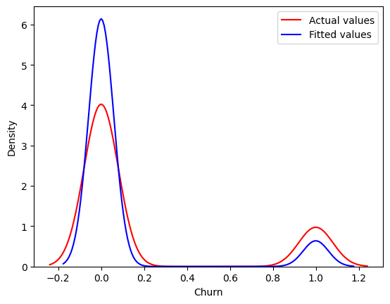
The more overlapping of two colors, the more accurate the model is.
python from sklearn.metrics import classification_report
print(classification_report(y_test,dtree_pred))
precision recall f1-score support
0 0.87 0.98 0.92 2416
1 0.80 0.39 0.52 584
accuracy 0.86 3000
macro avg 0.83 0.68 0.72 3000
weighted avg 0.85 0.86 0.84 3000
python from sklearn.metrics import
accuracy_score,mean_absolute_error,r2_score print('Accuracy score
:',accuracy_score(y_test,dtree_pred)) print('Mean Absolute Error score
:',mean_absolute_error(y_test,dtree_pred)) print('R2 score
:',r2_score(y_test,dtree_pred))
Accuracy score : 0.8613333333333333
Mean Absolute Error score : 0.13866666666666666
R2 score : 0.11548580241313633
python plt.figure(figsize=(8,6))
sns.heatmap(confusion_matrix(y_test,rfc_pred),annot=True,fmt='d',cmap='Blues')
plt.xlabel('Predicted') plt.ylabel('Actual') plt.title("Confusion
Matrix for Random Forest Classifier") plt.show()
The True Positive shows the count of correctly classified data points whereas the False Positive elements are those that are misclassified by the model. The higher the True Positive values of the confusion matrix the better, indicating many correct predictions.
python ax = sns.kdeplot(y_test,color='r',label='Actual values')
sns.kdeplot(rfc_pred,color='b',label='Fitted values',ax=ax)
plt.legend() plt.show()
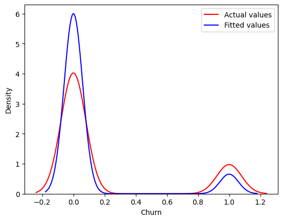
python from sklearn.metrics import classification_report
print(classification_report(y_test,rfc_pred))
precision recall f1-score support
0 0.87 0.98 0.92 2416
1 0.82 0.41 0.55 584
accuracy 0.87 3000
macro avg 0.85 0.70 0.74 3000
weighted avg 0.86 0.87 0.85 3000
```python print("Accuracy score :",accuracy_score(y_test,rfc_pred)) print('Mean Absolute Error :',mean_absolute_error(y_test,rfc_pred)) print("R2 score :",r2_score(y_test,rfc_pred))
```
Accuracy score : 0.868
Mean Absolute Error : 0.132
R2 score : 0.15801052345096633
From the exploratory data analysis, I have concluded that the churn count of the customersdepends upon the following factors:
Coming to the classification models, I have used the following models:
Both the models were hyperparameter tuned using GridSearchCV. Both the models have nearly equal accuracy score. But, the Random Forest Classifier has a better accuracy and precision score than the Decision Tree Classifier.